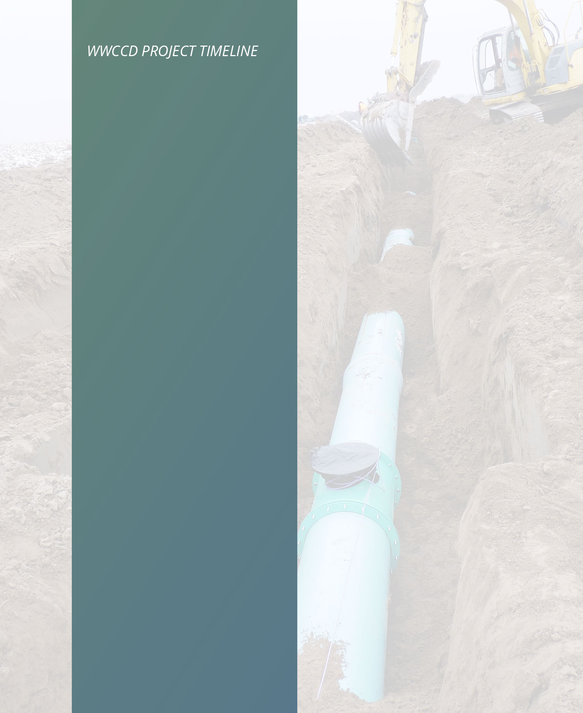
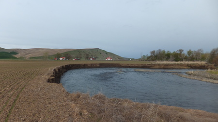
McCaw Phase B increases fish habitat to a section of the Touchet River East of Waitsburg, WA. It is the third of two other completed projects in this reach of the Touchet River. It provides Mid Columbia steelhead rearing habitat, bull trout wintering habitat, and non-listed Chinook passage and holding habitat. This project improved overall river channel complexity by incrasing bar development, pool establishment, and overall stream length.
McCaw Project Page
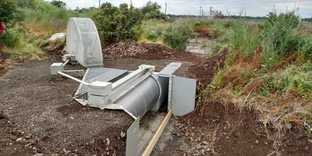
Replaced inefficient pipe grating with a refurbished fish screen. With the more efficient screen the yearly WDFW fish salvage was no longer necessary. Funded by the WA State Conservation Commission
Byerley Project Page
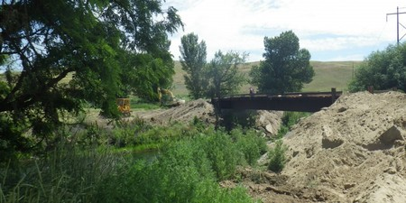
Designed and installed a vehicle passage bridge over the Touchet River. This eliminated the traditional method of fording and is now highly beneficial to endangered fish species. Funded by WA State Conservation Commission.
Gailey Bridge Project Page

Installed a set of large screens and meters while dealing with challenging geographical and topographical issues. WWCCD's first screen project on the Snake River. Funded by WA-DOW and WA-RCO.
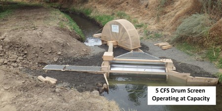
Replaced a barrier diversion dam with a custom fish screen, which also opened up 2 miles of side channel well suited for fish habitat. Funded by WA-RCO, WA Salmon Recovery Funding Board.
Titus Creek Project Page
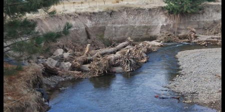
The first phase of a series of projects installed instream structures for 2100 feet of stream. Two side channels with a combined length of over 1000 feet were also activated. Funded by WA-DOE, WA State Conservation Commission, WA Salmon Recovery Board.
McCaw Fish Restoration Project Page
This irrigation efficiency piping replaced over 7 miles of inefficient open earth canals with a buried pipeline delivery system. In conjunction with the 2,800 ft. project, 5.95 CFS of water were put into trust. Funded by WA-DOE, BPA, WA State Conservation Commission, GFID #13 Board of Directors, BPA, Bureau of Reclamation.
Gardena Farms North Lateral and 2800ft Project Page

This irrigation efficiency piping project involved eliminating over 8 miles of open canal delivery canals with buried pipeline conveyance. Funded by WA-DOE and BPA.
BWOL Project Page
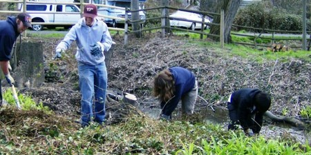
CURB projects were a joint effort by the Walla Walla County Conservation District, Tri-State Steelheaders, and the WA Dept of Ecology projects. CURB restored salmonid bearing streams in the Walla Walla and College Place urban area with funding from the WA-DOE.
CURB Program
Targeted 5.65 miles of Mill Creek for herbicide applicationfor Japanese Knotweed. Control of Bohemian Knotweed was estimated at 75%. Funded by WA State Conservation Commission.
This small project was designed to catch Stone Creek overflow and direct it into a recharge basin north of Commercial Drive in College Place.
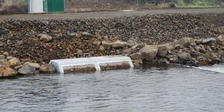
Installed a custom fish screen on the last large unscreened irrigation diversion on Mill Creek. Funded by WDFW, CTUIR, BPA, Tri-State Steelheaders, WA State Conservation Commission.
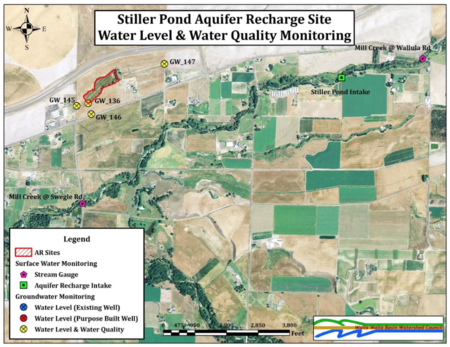
Stiller Pond was originally used as a regulating reservoir for irrigation water used by Stiller Farms. Working with the Walla Walla Watershed Management Partnership, the site was recognized and developed as a shallow aquifer recharge site. Funded by BPA.
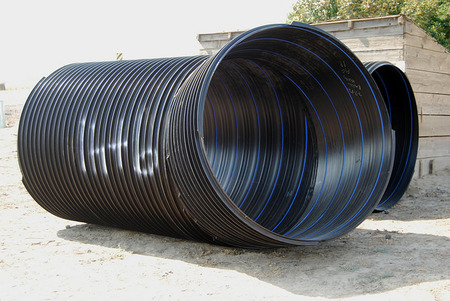
This irrigation efficiency piping project involved eliminating 2,800 feet of open irrigation delivery canal with a 66-inch diameter pipeline beginning at the inlet of the Pine Creek Inverted Siphon that serves both the North and South Laterals for GFID. Funded by WA-DOE, BPA, WA State Conservation Commission, GFID #13 Board of Directors, Bureau of Reclamation.
Demonstrated actions that can be taken to reduce sediment delivery to salmonid bearing streams. Through a partnership with Bonneville Power Administration and the National Fish and Wildlife Foundation, the road was surfaced with crushed rock and the outfall of the realroad culvert was directed into an inlet structure and pipeline designed to carry the runoff water safely and cleanly to the creek. Funded by NFWF and WA State Conservation Commission.
Restoration of approximately 17 acres of wetland and the construction of three open water ponds. Funded by WA State Dept. of Transportation.

Restoration of Touchet River fish habitat and reduction of sediment recruitment through the use of barbs and large woody debris structures. The project also includes a rparian forest buffer planting on the south side of the river.
Dozier Project Page
Remediation of two fish passage barriers on Spring Creek, a spring-fed tributary to Dry Creek located on the Jay Nowogrowski Farm. The lower barrier is at the Nowogrowski farm bridge, approximately 0.5 miles up Spring Creek Road from its intersection with Buroker Road and Hwy. 12. Funded by BPA and CTUIR.
Spring Creek Project Page
Installed solar powered source for a well on a remote range unit. This allowed for better grazing distribution and better utilization of the rangeland resource. Funded by WA State Conservation Commission.
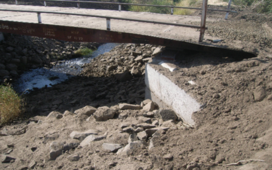
Improvement of existing bridge support abutments to avoid forking the Spring Creek. Funded by the WA State Conservation Commission.
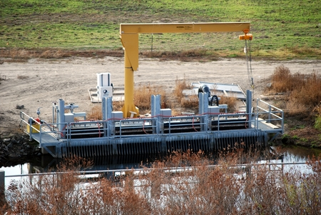
The Hofer East-West Complex Projects involved the construction of a new fish ladder at Hofer Dam to open up adult fish access to 186 miles of stream in the Touchet River Basin, Construction of a pumping station, installation of 37,000 feet of pressurized pipeline, and the installation of another 35,000 feet of pipeline.
Hofer Dam Project Page
The Hofer East-West Complex Projects involved the construction of a new fish ladder at Hofer Dam to open up adult fish access to 186 miles of stream in the Touchet River Basin, Construction of a pumping station, installation of 37,000 feet of pressurized pipeline, and the installation of another 35,000 feet of pipeline.
Hofer Dam Project Page
The Hofer East-West Complex Projects involved the construction of a new fish ladder at Hofer Dam to open up adult fish access to 186 miles of stream in the Touchet River Basin, Construction of a pumping station, installation of 37,000 feet of pressurized pipeline, and the installation of another 35,000 feet of pipeline.
Hofer Dam Project Page
The Hofer East-West Complex Projects involved the construction of a new fish ladder at Hofer Dam to open up adult fish access to 186 miles of stream in the Touchet River Basin, Construction of a pumping station, installation of 37,000 feet of pressurized pipeline, and the installation of another 35,000 feet of pipeline.
Hofer Dam Project Page
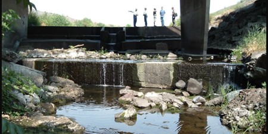
Construction of new fish ladder and sills to aid fish passage. Funded by Bonneville Power Administration, CTUIR, US Fish and Wildife, and Washington Salmon Recovery Funding Board.
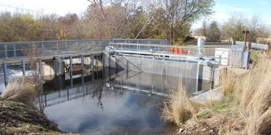
Construction of a new high tech fish screen at the headwaters of Garrison Creek. Funded by Bonneville Power Administration and Salmon Recovery Funding Board.
Garrison Creek Screen Project Page
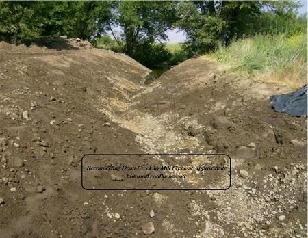
This project restored Doan Creek to its historical confluence with Mill Creek, the point of irrigation diversion was changed to the mouth of the creek with water being piped to the irrigation ditch by the NGS Greate Grave. A new pump station was also developed with metering and fish screens. Funded by NPS, WA Salmon Recovery Board, WWCCD, WA State Conservation Commission, Whitman College, and the Tri-State Steelheaders.
Doan Creek Project Page
Installation of new active cleaning fish screen for protection of salmonids. Funded by WA-Salmon Recovery Funding Board.
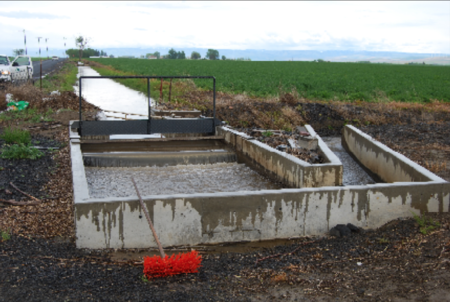
Replaced open ditches with a closed piped system. Saved water was targeted for placement into trust. Also encouraged irrigators along the streams to participate in the Conservation Reserve Enhancement Program (CREP). Funded by NFWF, WA-DOE, BPA, USFWS.
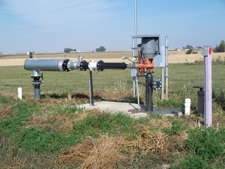
Cost-share program that enables landowners to measure their water use and come into compliance with state water-use regulations.
Screens and Meters Program
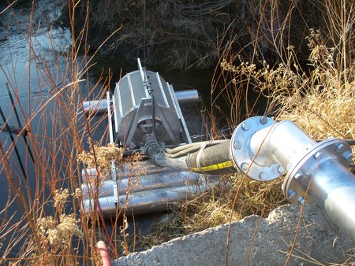
Cost-share program that assists landowners meet federal screening standards with federally approved fish screens.
Screens and Meters Program
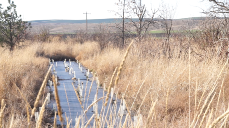
Restoration of native riparian forest vegetation along perennial streams with value to salmonid species. Funded by FSA and WA State Conservation Commission with technical assistance by NRCS and WWCCD. About 25% of Washington's CREP buffers are located in Walla Walla County.
CREP Program
2018
2017
2016
2015
2014
2013
2012
2011
2010
2009
2008
2007
2006
2005
2004
2003
2002
2001
2000
1999
1998